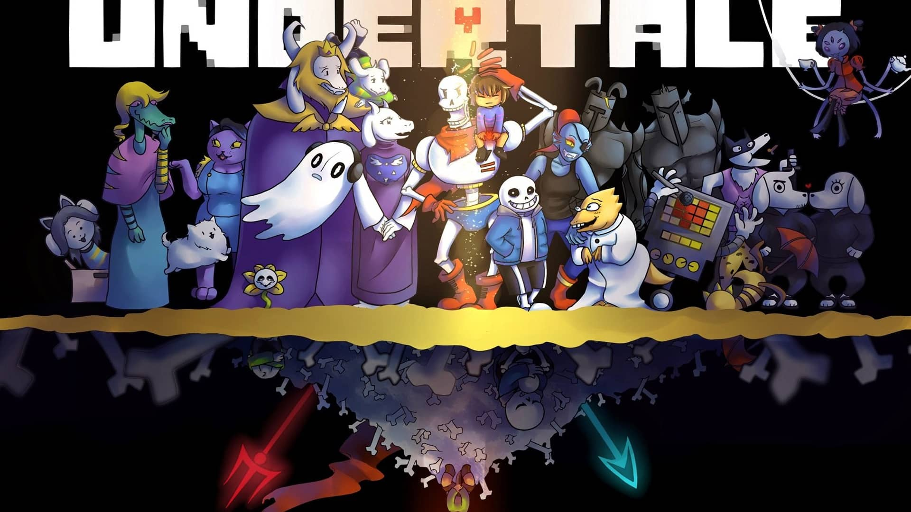

| Unusual Findings is a love letter to the 80´s in the form of an awesome point and click adventure game. Inspired by classics as Explorers or The Goonies, it delivers a great story with lovable characters full of satisfying puzzles. Three friends uncover mysteries in the 1980s. Follow their amazing adventures in a game where your decisions really matter. Be prepared to spin like a record on your incredible journey back to the era of synthesizers, VHS Rental stores, 8 bits games and evil alien conspiracies. |
Unavowed is an indie point-and-click adventure game developed and published by Wadjet Eye Games. It was released on August 8, 2018 A demon has possessed you and used your body to tear a swath of bloodshed through New York. You are now free, but life as you knew it is over. Your only path forward is joining the Unavowed - an ancient society dedicated to stopping evil. No matter what the cost. |
||
| Celeste is a 2018 platform game developed and published by indie developer Matt Makes Games. The player controls Madeline, a young girl with anxiety and depression who aims to climb Celeste Mountain. Help Madeline survive her inner demons on her journey to the top of Celeste Mountain, in this super-tight platformer from the creators of TowerFall. Brave hundreds of hand-crafted challenges, uncover devious secrets, and piece together the mystery of the mountain. |
 |
UNDERTALE! The RPG game where you don't have to destroy anyone. Undertale is a 2015 2D role-playing video game created by American indie developer Toby Fox. The player controls a child who has fallen into the Underground: a large, secluded region under the surface of the Earth, separated by a magical barrier. |
 |
| Dead Cells is a rogue-lite, metroidvania inspired, action-platformer. You'll explore a sprawling, ever-changing castle... assuming you’re able to fight your way past its keepers in 2D souls-lite combat. No checkpoints. Kill, die, learn, repeat. In the game, the player takes the role of an amorphous creature called the Prisoner. As the Prisoner, the player must fight their way out of a diseased island in order to slay the island's King. The player gains weapons |
Hyper Light Drifter is a 2D action role-playing game developed by Heart Machine. The game pays homage to 8-bit and 16-bit games. Drifters of this world are the collectors of forgotten knowledge, lost technologies and broken histories. Our Drifter is haunted by an insatiable illness, traveling further into the lands of Buried Time, hoping to discover a way to quiet the vicious disease. |